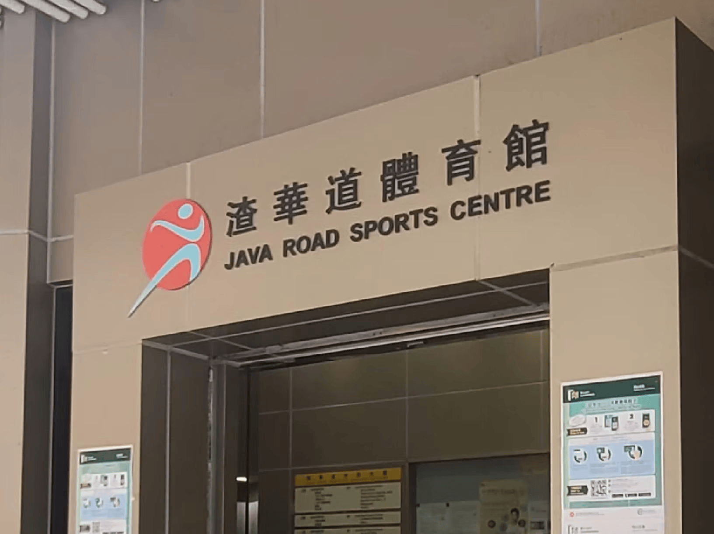

Hygiene First 首衛有限公司接受立法會江玉歡議員頒發感謝狀

Hygiene First 首衛有限公司第十二次榮獲立法會江玉歡議員頒發感謝狀，這是對我們長期以來優質服務的持續認可。
十二次獲獎體現了：
- 服務品質的卓越性
- 社會責任的承擔
- 專業團隊的實力
- 創新服務的成果
- 行業領導的地位
我們將繼續秉持專業精神，為社會提供更優質的護理服務，回報社會各界的信任與支持。

Hygiene First 首衛有限公司第十二次榮獲立法會江玉歡議員頒發感謝狀，這是對我們長期以來優質服務的持續認可。
十二次獲獎體現了：
我們將繼續秉持專業精神，為社會提供更優質的護理服務，回報社會各界的信任與支持。